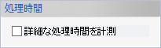

部材形状ファイルの読み込み
部材形状のパラメータを記述してあるファイルを読み込んでバッチ処理で部品を作成することができます。
操作方法
部材形状ファイルを選択するダイアログが表示されます。ファイルを選択して実行します。
コマンド実行後に処理結果をダイアログで表示します。エラーがあった場合はエラー行が続けて表示されます。


パラメータ
- 部材ファイル
読み込む部材ファイルを指定します。
- 読み込みオプション
読み込む時に同じ要素名の部材を更新するかどうか指定します。
- 全て新規作成
全ての要素を新規作成します。
- 全て更新
既存要素が見つかった場合は更新、見つからない場合は新規作成します。
- 各行のフラグで指示
CSVファイルの各行の更新フラグに従います。
- 全て新規作成
- 処理時間

読み込み完了時にCSVファイルの各行の処理時間を表示します。
- エラー時の動作

読み込みに失敗した行を自動的に再度読み込みます。作成・更新する要素間に依存関係があると、一度の読み込みではうまくいかないことがあります。そうした場合にはあらかじめこのオプションをONにして読み込みを実行してください。
CSVファイルのフォーマット
部品形状ファイルは以下のいずれかの行で構成されるCSVファイル（コンマ区切りのテキストファイル）で作成します。 サンプルはこちらです。
- プレート
- 条材
- ブラケット
- フェイスプレート
- フランジ
- 平面（データム）
- カーブ上の点
- スケッチの定義
- スケッチレイヤー
- 直線（スケッチ）
- 円弧（スケッチ）
- 3点円弧（スケッチ）
- 円（スケッチ）
- 交線（スケッチ）
- 交点（スケッチ）
- フィレット（スケッチ）
- 拘束（スケッチ）
- 直線（カーブ）
- 交線（カーブ）
- 投影線（カーブ）
- 面上オフセット線
- 押し出しフィーチャー
- スイープフィーチャー
- ロフトフィーチャー
- 厚み付けフィーチャー
- カットフィーチャー
- 押し出しサーフェイス
- スイープサーフェイス
- ロフトサーフェイス
- 平面（サーフェイス）
- 新規ソリッドボディ
- ソリッドボディフィーチャー
- 板厚変更
- ボディ分割
- スティッチボディ
- 要素ウォッチ変数
| カラム | 内容 | 空欄スキップ | 説明 |
|---|---|---|---|
| プレート | |||
| 1 | 部品タイプ | - | プレートは1 |
| 2 | 部品名 | - | 作成するプレート要素の要素名称を指定します。設定しない場合は空欄です。 |
| 3 | 部材グループ名 | - |
作成するプレート要素を要素グループに追加する場合はグループ名を指定します。追加しない場合は空欄です。 /で区切るとグループの階層を意味します。 ex) aa/bb/cc |
| 4 | 部品材料名 | - | 作成するプレート要素の材料の材料名称を指定します。設定しない場合は空欄です。 |
| 5 | プレート平面法線方向 | - | X,Y,Zのいずれか |
| 6 | プレート平面位置 | - | 数値（mm）または変数名、計算式 |
| 7 | 板厚 | - | 数値（mm）または変数名、計算式 |
| 8 | モールド位置 | - | 数値（mm）または変数名、計算式 |
| 9 | 板逃方向 | - | 空欄は中心、+ は＋方向、-は-方向 |
| 10 | 境界ソリッド | - | 境界ソリッド名称（指定しない場合は空欄） |
| 11 | 区間1始点 | - |
数値（mm）または変数名、計算式（空欄は指定しない） 区間１は、プレート平面法線がX方向の時はY区間、Y方向の時はZ区間、Z方向の時はX区間となります。 |
| 12 | 区間1終点 | - | 数値（mm）または変数名、計算式（空欄は指定しない） |
| 13 | 区間2始点 | - | 数値（mm）または変数名、計算式（空欄は指定しない） 区間２は、プレート平面法線がX方向の時はZ区間、Y方向の時はX区間、Z方向の時はY区間となります。 |
| 14 | 区間2始点 | - | 数値（mm）または変数名、計算式（空欄は指定しない） |
| 15 | 更新フラグ | - | インポート時に、要素名（要素グループパスを含む）が一致する要素を更新する場合1を指定します。更新しない場合は空欄とします。 |
| 条材 | |||
| 1 | 部品タイプ | - |
基準平面指定の条材は11 取付線指定の条材は12 取付線+取付方向線指定の条材は13 元要素指定の条材は14 ロンジ間の条材は15 |
| 2 | 部品名 | - | 作成する条材要素の要素名称を指定します。設定しない場合は空欄です。 |
| 3 | 部材グループ名 | - |
作成する条材要素を要素グループに追加する場合はグループ名を指定します。追加しない場合は空欄です。 /で区切るとグループの階層を意味します。 ex) aa/bb/cc |
| 4 | 部品材料名 | - | 作成する条材要素の材料の材料名称を指定します。設定しない場合は空欄です。 |
| 5 | 部品名 （ビルトアップ） |
- | 作成する条材要素（ビルトアップ）の要素名称を指定します。設定しない場合は空欄です。 |
| 6 | 部材グループ名 （ビルトアップ） |
- |
作成する条材要素（ビルトアップ）を要素グループに追加する場合はグループ名を指定します。追加しない場合は空欄です。 /で区切るとグループの階層を意味します。 ex) aa/bb/cc |
| 7 | 部品材料名 （ビルトアップ） |
- | 作成する条材要素（ビルトアップ）の材料の材料名称を指定します。設定しない場合は空欄です。 |
| 8〜 | 形状データ | ◯ | 部材既定寸法設定ファイルの条材の既定寸法の指定と同様にタイプを表す数値と寸法値を指定します。（既定寸法名のフィールドは含みません） |
| 〜 | フェイス角度設定 | ◯ |
※形状タイプがBU1（1201）〜BU5（1205）の場合のみ 数値（mm）または変数名、計算式 |
| 〜 | 基準面法線方向 | - |
※基準平面指定（11）の場合のみ X,Y,Zのいずれか |
| 〜 | 基準面オフセット | ◯ |
※基準平面指定（11）の場合のみ 数値（mm）または変数名、計算式 |
| 〜 | 取付線 | ◯ |
※取付線指定（12）または取付線+取付方向線指定（13）の場合のみ スケッチ名あるいはカーブ名を指定します。 スケッチ名を指定した場合は続いてレイヤー名やスケッチ要素名、カーブを指定した場合は複数本のカーブを指定できます。
|
| 〜 | 取付面 | ◯ |
※基準平面指定（11）、取付線指定（12）、ロンジ間（15）の場合のみ シートボディまたはソリッドボディの要素名を指定します。（複数可） ソリッドボディを対象要素とした場合はさらに対象面を指定します。（1〜7の数値） 要素数分繰り返し、最後に空欄を入れます。 |
| 〜 | 取付線の結合トレランス | ◯ |
※基準平面指定（11）または取付線指定（12）の場合のみ 指定しない場合は0を入力します。 指定する場合は数値（mm）または変数名、計算式を入力します。 |
| 〜 | 基準直線 | ◯ |
※取付線+取付方向線指定（13）の場合のみ スケッチ名あるいはカーブ名を指定します。 スケッチ名を指定した場合は続いてスケッチ要素名、カーブを指定した場合は複数本のカーブを指定できます。
|
| 〜 | 元の条材 | ◯ |
※元要素指定（14）の場合のみ 元の条材名を指定します。 グループ階層とソリッド名で指定できます。 ex) aa/bb/cc/solid01 |
| 〜 | ロンジ１ | ◯ |
※ロンジ間（15）の場合のみ ロンジ１となる条材名を指定します。 グループ階層とソリッド名で指定できます。 ex) aa/bb/cc/solid01 |
| 〜 | ロンジ１のモールド位置 | ◯ |
※ロンジ間（15）の場合のみ ロンジ１のモールド位置を指定します。 空欄はロンジ１のセンター、+はモールド面、-は反対側の面です。 |
| 〜 | ロンジ２ | ◯ |
※ロンジ間（15）の場合のみ ロンジ２となる条材名を指定します。 グループ階層とソリッド名で指定できます。 ex) aa/bb/cc/solid01 指定しない場合は空欄にしてください。 |
| 〜 | 板逃方向 | - |
※元要素指定（14）の場合はこの列をスキップします。 空欄はセンター、+は+方向、-は-方向 |
| 〜 | モールド位置 | - |
※元要素指定（14）の場合はこの列をスキップします。 数値（mm）または変数名、計算式 |
| 〜 | 取付方向反転 | - |
※元要素指定（14）の場合はこの列をスキップします。 フラグ（0または1）で指定します。 |
| 〜 | アングル方向反転 | ◯ |
※元要素指定（14）の場合はこの列をスキップします。 フラグ（0または1）で指定します。 |
| 〜 | 取付線の境界を基準に | - |
※取付線指定（12）の場合のみ フラグ（0または1）で指定します。 |
| 〜 | 投影方向指定 | ◯ |
※取付線指定（12）の場合のみ
|
| 〜 | 取付角度 | - |
※基準平面指定（11）または取付線指定（12）の場合のみ 数値（mm）または変数名、計算式 |
| 〜 | 取付方向 | ◯ |
※基準平面指定（11）、取付線指定（12）、ロンジ間（15）の場合のみ 0はデフォルト、1は取付方向指定、2は基準平面内 取付方向指定の場合のみ、取付方向を+X,-X,+Y,-Y,+Z,-Zいずれかの文字列かベクトル（XYZの数値（mm））で指定します。 （ロンジ間では取付方向指定を設定できません。） |
| 〜 | 端部１ | ◯ |
端部は骨材方向軸上の座標値（数値（mm）または変数名、計算式）、もしくは要素（点、平面、シートボディ、ソリッドボディ）のいずれか一つで指定します。 要素は要素名で指定します。ソリッドボディを端部要素とした場合はさらに端部面を指定します。（1〜7の数値）（複数要素可） 要素数分繰り返し、最後に空欄を入れます。また、端部要素を指定しない場合は空欄のみ入れます。 続けて端部のタイプ、寸法値を指定します。 部材既定寸法設定ファイルの条材端部の既定寸法の指定と同様にタイプを表す数値と寸法値を指定します。（既定寸法名のフィールドは含みません） 元要素指定（14）で端部を指定しない場合は、要素名を空欄、端部のタイプを0に指定します。 |
| 〜 | 端部２ | ◯ | 端部１と同様に指定します。 |
| 〜 | 端部１スカラップ | ◯ | 部材既定寸法設定ファイルの条材端部スカラップの既定寸法の指定と同様にタイプを表す数値と寸法値を指定します。（既定寸法名のフィールドは含みません） スカラップを指定しない場合は0とします。 |
| 〜 | 端部２スカラップ | ◯ | 端部１スカラップと同様に指定します。 |
| 〜 | 更新フラグ | - | インポート時に、要素名（要素グループパスを含む）が一致する要素を更新する場合1を指定します。更新しない場合は空欄とします。 |
| ブラケット | |||
| 1 | 部品タイプ | - | ブラケットは5 |
| 2 | 部品名 | - | 作成するブラケット要素の要素名称を指定します。設定しない場合は空欄です。 |
| 3 | 部材グループ名 | - |
作成するブラケット要素を要素グループに追加する場合はグループ名を指定します。追加しない場合は空欄です。 /で区切るとグループの階層を意味します。 ex) aa/bb/cc |
| 4 | 部品材料名 | - | 作成するブラケット要素の材料の材料名称を指定します。設定しない場合は空欄です。 |
| 5 | 平面法線方向 | - | X,Y,Zのいずれか |
| 6 | 平面位置 | - | 数値（mm）または変数名、計算式 |
| 7 | 板厚 | - | 数値（mm）または変数名、計算式 |
| 8 | モールド位置 | - | 数値（mm）または変数名、計算式 |
| 9 | 板逃方向 | - | 空欄は中心、+ は＋方向、-は-方向 |
| 10〜 | 形状データ | ◯ | 部材既定寸法設定ファイルのブラケットの既定寸法の指定と同様にタイプを表す数値と寸法値を指定します。（既定寸法名のフィールドは含みません） |
| 〜 | スカラップ | ◯ | つけない場合は0とします。 数値（mm）で指定します。つける場合、カットかどうかのフラグ（0か1）を続けて指定します。 3面のブラケット場合は、もう1組（数値とフラグ）を続けて指定します。 |
| 〜 | 面1〜3 | ◯ | シートボディまたはソリッドボディの要素名を指定します。（複数可） ソリッドボディを対象要素とした場合はさらに対象面を指定します。（1〜7の数値） 要素数分繰り返し、最後に空欄を入れます。 反転するかどうかのフラグ（0か1）を続けて指定します。 |
| 〜 | フランジ | ◯ | つけない場合は0とします。 つける場合、部材既定寸法設定ファイルのフランジの既定寸法の指定と同様にタイプを表す数値と寸法値を指定します。（既定寸法名のフィールドは含みません） 反転するかどうかのフラグ（0か1）を続けて指定します。 取り付け角度（数値（mm）または変数名、計算式）で指定します。 |
| 〜 | 寸法基準1 | ◯ | 部材既定寸法設定ファイルのブラケット寸法基準の既定寸法の指定と同様にタイプを表す数値と寸法値を指定します。（既定寸法名のフィールドは含みません） 面は、シートボディまたはソリッドボディの要素名を指定します。（複数可） ソリッドボディを対象要素とした場合はさらに対象面を指定します。（1〜7の数値） 要素数分繰り返し、最後に空欄を入れます。 |
| 〜 | 寸法基準2 | ◯ | 寸法基準1と同様に指定します。 |
| 〜 | 端部1下スカラップ 端部1上スカラップ 端部2下スカラップ 端部2上スカラップ |
◯ | つけない場合は0とします。 つける場合、部材既定寸法設定ファイルのスカラップの既定寸法の指定と同様にタイプを表す数値と寸法値を指定します。（既定寸法名のフィールドは含みません） |
| 〜 | 更新フラグ | - | インポート時に、要素名（要素グループパスを含む）が一致する要素を更新する場合1を指定します。更新しない場合は空欄とします。 |
| フェイスプレート | |||
| 1 | 部品タイプ | - |
元要素指定のフェイスプレートは22 ブラケット指定のフェイスプレートは23 開口部指定のフェイスプレートは24 ※作成されるフェイスプレートは面指定となります。 |
| 2 | 部品名 | - | 作成するフェイスプレート要素の要素名称を指定します。設定しない場合は空欄です。 |
| 3 | 部材グループ名 | - |
作成するフェイスプレート要素を要素グループに追加する場合はグループ名を指定します。追加しない場合は空欄です。 /で区切るとグループの階層を意味します。 ex) aa/bb/cc |
| 4 | 部品材料名 | - | 作成するフェイスプレート要素の材料の材料名称を指定します。設定しない場合は空欄です。 |
| 5 | 取付位置 | - |
元要素指定（22）の場合は、元のフェイスプレート名を指定します。 ブラケット指定（23）の場合は、ブラケット名を指定します。 開口部指定（24）の場合は、開口部が1つある板材ソリッドボディ名を指定します。 いずれもグループ階層とソリッド名で指定できます。 ex) aa/bb/cc/solid01 |
| 6〜 | 形状データ | ◯ | 部材既定寸法設定ファイルのフェイスプレートの既定寸法の指定と同様にタイプを表す数値と寸法値を指定します。（既定寸法名のフィールドは含みません） |
| 〜 | 方向反転 | - |
反転するかどうかのフラグ（0か1）を指定します。 ※開口部指定（24）の場合、モールド面と反対の面を基準面するときに反転します。 ※元要素指定（22）の場合はこの列をスキップします。 |
| 〜 | 取付角度指定 | - |
数値（mm）または変数名、計算式 ※元要素指定（22）の場合はこの列をスキップします。 |
| 〜 | 端部１ | ◯ |
つけない場合は0とします。（端部要素名の空欄も不要です）
つける場合、部材既定寸法設定ファイルのフェイスプレート端部の既定寸法の指定と同様にタイプを表す数値と寸法値を指定します。（既定寸法名のフィールドは含みません）
端部要素を指定する場合、骨材方向軸上の座標値（数値（mm）または変数名、計算式）、もしくは要素（点、平面、シートボディ、ソリッドボディ）のいずれか一つで指定します。
要素は要素名で指定します。ソリッドボディを端部要素とした場合はさらに端部面を指定します。（1〜7の数値）（複数可） |
| 〜 | 端部２ | ◯ | 端部１と同様に指定します。 |
| 〜 | 更新フラグ | - | インポート時に、要素名（要素グループパスを含む）が一致する要素を更新する場合1を指定します。更新しない場合は空欄とします。 |
| フランジ | |||
| 1 | 部品タイプ | - | 条材のフラットバーにフランジをつける場合は31 |
| 2 | 部品名 | - | 作成するフランジフィーチャーの要素名を指定します。設定しない場合は空欄です。 |
| 3 | 対象ソリッド名 | - |
フランジを作成する対象のソリッド名を指定します。グループ階層とソリッド名で指定できます。 ex) aa/bb/cc/body01 フラットバータイプの条材を指定する必要があります。 |
| 4〜 | 形状データ | ◯ | 部材既定寸法設定ファイルのフランジの既定寸法の指定と同様にタイプを表す数値と寸法値を指定します。（既定寸法名のフィールドは含みません） |
| 〜 | アングル方向反転 | - |
反転するかどうかのフラグ（0か1）を指定します。 デフォルトでフラットバーのモールド面が基準面となります。 |
| 〜 | 取付角度 | - |
数値（mm）または変数名、計算式 |
| ※フランジが対象ソリッドに存在する場合、読み込みオプションに関係なく全て更新として処理されます。 | |||
| 平面（データム） | |||
| 1 | 部品タイプ | - |
平面要素による平面は401 3点による平面は402 基準線と法線方向にょる平面は403 投影による平面は404 直線と平面上の方向による平面は405 |
| 2 | 要素名 | - | 作成する平面要素の名称を指定します。設定しない場合は空欄です。 |
| 3 | 要素グループ名 | - |
作成する平面要素を要素グループに追加する場合はグループ名を指定します。追加しない場合は空欄です。 /で区切るとグループの階層を意味します。 ex) aa/bb/cc |
| 4 | 関連づけ | - | ボディへ関連づけを行う場合は1、フィーチャーへ関連づけを行う場合は0または空欄です。 |
| 5,6 | 平面タイプ 移動距離 |
◯ |
※平面要素タイプ（401）の場合 +X,-X,+Y,-Y,+Z,-Zいずれかの文字列と移動距離（数値（mm）または変数名）を指定します。 |
| 5〜 | 点1、点2、点3 | ◯ |
※3点タイプ（402）の場合 点要素名あるいは座標値（XYZの数値（mm））を3つ指定します。 |
| 5〜 | 基準点 法線方向 |
◯ |
※基準点と法線方向タイプ（403）の場合 基準点となる点要素名あるいは座標値（XYZの数値（mm））を指定します。 続けて法線方向ベクトルとして、+X,-X,+Y,-Y,+Z,-Zいずれかの文字列かベクトル（XYZの数値（mm））を指定します。 |
| 5〜 | 基準点 投影対象要素 |
◯ |
※投影タイプ（404）の場合 基準点となる点要素名あるいは座標値（XYZの数値（mm））を指定します。 続けて投影対象要素として、カーブの要素名を指定します。 |
| 5〜 | 直線 方向 |
◯ |
※直線と平面上の方向タイプ（405）の場合 基準線となる方向1として、+X,-X,+Y,-Y,+Z,-Zいずれかの文字列を指定します。 続けて方向2として、+X,-X,+Y,-Y,+Z,-Zいずれかの文字列かベクトル（XYZの数値（mm））を指定します。 |
| 〜 | 更新フラグ | - | インポート時に、要素名（要素グループパスを含む）が一致する要素を更新する場合1を指定します。更新しない場合は空欄とします。 |
| カーブ上の点 | |||
| 1 | 部品タイプ | - | カーブ上の点の定義は452 |
| 2 | 要素名 | - | 作成する点要素の名称を指定します。設定しない場合は空欄です。 |
| 3 | 要素グループ名 | - |
作成する点要素を要素グループに追加する場合はグループ名を指定します。追加しない場合は空欄です。 /で区切るとグループの階層を意味します。 ex) aa/bb/cc |
| 4〜 | 対象カーブ名 | ◯ |
カーブ名あるいはスケッチ名を指定します。 スケッチ名を指定した場合は続いてスケッチ要素名を入力します。 |
| 〜 | 点のタイプ | - | 端点の場合は1、線上点の場合は2を指定します。 |
| 〜 | 基準点 | ◯ |
点要素名あるいは座標値（XYZの数値（mm））を3つ指定します。 端点の場合は、始終点のどちらか基準点に近い方が採用されます。 線上点の場合は、基準点からカーブ上の最近点（垂線の足）が計算されます。 |
| 〜 | 更新フラグ | - | インポート時に、要素名が一致する要素を更新する場合1を指定します。更新しない場合は空欄とします。 |
| スケッチの定義 | |||
| 1 | 部品タイプ | - | スケッチの定義は501 |
| 2 | 要素名 | - | 作成するスケッチ要素の名称を指定します。設定しない場合は空欄です。 |
| 3 | 要素グループ名 | - |
作成するスケッチ要素を要素グループに追加する場合はグループ名を指定します。追加しない場合は空欄です。 /で区切るとグループの階層を意味します。 ex) aa/bb/cc |
| 4〜 | スケッチ平面法線方向 | ◯ | +X,-X,+Y,-Y,+Z,-Zいずれかの文字列か、法線ベクトル（XYZの数値（mm））を指定します。 法線ベクトルを指定した場合は、続けて原点（XYZの数値（mm））とX軸方向ベクトルを指定します。 X軸方向ベクトルは、+X,-X,+Y,-Y,+Z,-Zいずれかの文字列かベクトル（XYZの数値（mm））を指定します。 |
| 〜 | 平面オフセット | - | 数値（mm）または変数名、計算式 |
| 〜 | 更新フラグ | - | インポート時に、要素名（要素グループパスを含む）が一致する要素を更新する場合1を指定します。更新しない場合は空欄とします。 |
| スケッチレイヤー | |||
| 1 | 部品タイプ | - | スケッチレイヤーの定義は503 |
| 2 | レイヤー名 | - | 作成するレイヤーの名称を指定します。 |
| 3 | 対象スケッチ名 | - | レイヤーを作成する対象のスケッチ名を指定します。グループ階層とスケッチ名で指定できます。 ex) aa/bb/cc/skt01 |
| 4 | 更新フラグ | - |
インポート時に、要素名が一致する要素を更新する場合1を指定します。更新しない場合は空欄とします。 更新しない場合は、末尾に数字がついた新しいレイヤーが作成されます。 |
| 直線（スケッチ） | |||
| 1 | 部品タイプ | - | 直線（スケッチ）の定義は502 |
| 2 | 要素名 | - | 作成する要素の名称を指定します。設定しない場合は空欄です。 |
| 3 | 対象スケッチ名 | - | 要素を作成する対象のスケッチ名を指定します。グループ階層とスケッチ名で指定できます。 ex) aa/bb/cc/skt01 |
| 4 | 対象レイヤー名 | - |
要素を作成する対象のレイヤー名を指定します。空欄の場合は、カレントレイヤーに作成されます。 更新時、違うレイヤー名を指定すると、指定されたレイヤーへ要素を移動できます。 |
| 5,6 | 始点 | - |
直線の始点をXYの数値（mm）または変数名、計算式で指定します。 変数名および計算式で指定した場合、X座標値拘束またはY座標値拘束が作成されます。 |
| 7,8 | 終点 | - |
直線の終点をXYの数値（mm）または変数名、計算式で指定します。 変数名および計算式で指定した場合、X座標値拘束またはY座標値拘束が作成されます。 |
| 9 | 更新フラグ | - | インポート時に、要素名が一致する要素を更新する場合1を指定します。更新しない場合は空欄とします。 |
| 円弧（スケッチ） | |||
| 1 | 部品タイプ | - | 円弧（スケッチ）の定義は511 |
| 2 | 要素名 | - | 作成する要素の名称を指定します。設定しない場合は空欄です。 |
| 3 | 対象スケッチ名 | - | 要素を作成する対象のスケッチ名を指定します。グループ階層とスケッチ名で指定できます。 ex) aa/bb/cc/skt01 |
| 4 | 対象レイヤー名 | - |
要素を作成する対象のレイヤー名を指定します。空欄の場合は、カレントレイヤーに作成されます。 更新時、違うレイヤー名を指定すると、指定されたレイヤーへ要素を移動できます。 |
| 5,6 | 中心点 | - |
円弧の中心点をXYの数値（mm）または変数名、計算式で指定します。 変数名および計算式で指定した場合、X座標値拘束またはY座標値拘束が作成されます。 |
| 7,8 | 始点 | - |
円弧の始点をXYの数値（mm）または変数名、計算式で指定します。 変数名および計算式で指定した場合、X座標値拘束またはY座標値拘束が作成されます。 |
| 9,10 | 終点 | - |
円弧の終点をXYの数値（mm）または変数名、計算式で指定します。 変数名および計算式で指定した場合、X座標値拘束またはY座標値拘束が作成されます。 |
| 11 | 反時計回り | - | 円弧を反時計回りにするかどうかのフラグ（0または1）を指定します。 |
| 12 | 更新フラグ | - | インポート時に、要素名が一致する要素を更新する場合1を指定します。更新しない場合は空欄とします。 |
| 3点円弧（スケッチ） | |||
| 1 | 部品タイプ | - | 3点円弧（スケッチ）の定義は512 |
| 2 | 要素名 | - | 作成する要素の名称を指定します。設定しない場合は空欄です。 |
| 3 | 対象スケッチ名 | - | 要素を作成する対象のスケッチ名を指定します。グループ階層とスケッチ名で指定できます。 ex) aa/bb/cc/skt01 |
| 4 | 対象レイヤー名 | - |
要素を作成する対象のレイヤー名を指定します。空欄の場合は、カレントレイヤーに作成されます。 更新時、違うレイヤー名を指定すると、指定されたレイヤーへ要素を移動できます。 |
| 5,6 | 始点 | - |
円弧の始点をXYの数値（mm）または変数名、計算式で指定します。 変数名および計算式で指定した場合、X座標値拘束またはY座標値拘束が作成されます。 |
| 7,8 | 周上の点 | - |
円弧上の点をXYの数値（mm）で指定します。 尚、変数名および計算式で指定することも可能ですが、拘束は作成されません。 |
| 9,10 | 終点 | - |
円弧の終点をXYの数値（mm）または変数名、計算式で指定します。 変数名および計算式で指定した場合、X座標値拘束またはY座標値拘束が作成されます。 |
| 11 | 更新フラグ | - | インポート時に、要素名が一致する要素を更新する場合1を指定します。更新しない場合は空欄とします。 |
| 円（スケッチ） | |||
| 1 | 部品タイプ | - | 円（スケッチ）の定義は521 |
| 2 | 要素名 | - | 作成する要素の名称を指定します。設定しない場合は空欄です。 |
| 3 | 対象スケッチ名 | - | 要素を作成する対象のスケッチ名を指定します。グループ階層とスケッチ名で指定できます。 ex) aa/bb/cc/skt01 |
| 4 | 対象レイヤー名 | - |
要素を作成する対象のレイヤー名を指定します。空欄の場合は、カレントレイヤーに作成されます。 更新時、違うレイヤー名を指定すると、指定されたレイヤーへ要素を移動できます。 |
| 5,6 | 中心点 | - |
円弧の中心点をXYの数値（mm）または変数名、計算式で指定します。 変数名および計算式で指定した場合、X座標値拘束またはY座標値拘束が作成されます。 |
| 7 | 半径 | - | 数値（mm）または変数名、計算式で指定します。 |
| 8 | 更新フラグ | - | インポート時に、要素名が一致する要素を更新する場合1を指定します。更新しない場合は空欄とします。 |
| 交線（スケッチ） | |||
| 1 | 部品タイプ | - | 交線（スケッチ）の定義は551 |
| 2 | 要素名 | - | 作成する交線要素の名称を指定します。設定しない場合は空欄です。 |
| 3 | 対象スケッチ名 | - | 要素を作成する対象のスケッチ名を指定します。グループ階層とスケッチ名で指定できます。 ex) aa/bb/cc/skt01 |
| 4 | 対象レイヤー名 | - |
要素を作成する対象のレイヤー名を指定します。空欄の場合は、カレントレイヤーに作成されます。 更新時、このフィールドは無視されます。 |
| 5 | 関連づけ | - | ボディへ関連づけを行う場合は1、フィーチャーへ関連づけを行う場合は0または空欄です。 |
| 6〜 | サーフェス | ◯ |
複数のシートまたはソリッド要素のどちらかで指定します。 ソリッドボディを対象要素とした場合はソリッドの構成面を全てを含めます。 ソリッドの対象面を指定することもできます。（1〜7の数値） 要素数分繰り返し、最後に空欄を入れます。 |
| 〜 | 複合線化 | ◯ |
複合線化のタイプをしない（1）、直線/円弧/複合線（2）、全て複合線（3）で指定します。 複合線化する場合、続いて端点結合のトレランスを数値（mm）または変数名で指定します。 ※スケッチ要素として他のCSV読み込みコマンドで利用する場合、全て複合線化を選ぶようにしてください。 |
| 〜 | 更新フラグ | - | インポート時に、要素名が一致する要素を更新する場合1を指定します。更新しない場合は空欄とします。 |
| 交点（スケッチ） | |||
| 1 | 部品タイプ | - | 交点（スケッチ）の定義は552 |
| 2 | 要素名 | - | 作成する交点要素の名称を指定します。設定しない場合は空欄です。 |
| 3 | 対象スケッチ名 | - | 要素を作成する対象のスケッチ名を指定します。グループ階層とスケッチ名で指定できます。 ex) aa/bb/cc/skt01 |
| 4 | 対象レイヤー名 | - |
要素を作成する対象のレイヤー名を指定します。空欄の場合は、カレントレイヤーに作成されます。 更新時、このフィールドは無視されます。 |
| 5 | 関連づけ | - | ボディへ関連づけを行う場合は1、フィーチャーへ関連づけを行う場合は0または空欄です。 |
| 6〜 | カーブ | ◯ |
1本のスケッチ要素またはカーブ要素を指定できます。
|
| 〜 | 更新フラグ | - | インポート時に、要素名が一致する要素を更新する場合1を指定します。更新しない場合は空欄とします。 |
| フィレット（スケッチ） | |||
| 1 | 部品タイプ | - | フィレット（スケッチ）の定義は561 |
| 2 | 要素名 | - | 作成される円弧要素の名称を指定します。設定しない場合は空欄です。 |
| 3 | 対象スケッチ名 | - | フィレットを作成する対象のスケッチ名を指定します。グループ階層とスケッチ名で指定できます。 ex) aa/bb/cc/skt01 |
| 4 | 対象レイヤー名 | - |
作成される円弧のレイヤー名を指定します。空欄の場合は、カレントレイヤーに作成されます。 |
| 5 | カーブ1,名称 | - |
フィレットを作成するスケッチ線名を指定します。 |
| 6,7 | カーブ1,点座標値 | - | カーブ1のフィレットを作成する側の点（線上でなくてもよい）位置の座標値X,Yを数値（mm）で指定します。 |
| 8 | カーブ2,名称 | - |
フィレットを作成するスケッチ線名を指定します。 |
| 9,10 | カーブ2,点座標値 | - | カーブ2のフィレットを作成する側の点（線上でなくてもよい）位置の座標値X,Yを数値（mm）で指定します。 |
| 11 | 半径 | - | フィレット円弧の半径を数値（mm）または変数名、計算式で指定します。 |
| 12 | トリムフラグ | - | 対象線をフィレット円弧でトリム,延長する場合1を指定します。 |
| 拘束（スケッチ） | |||
| 1 | 部品タイプ | - | 拘束（スケッチ）の定義は571 |
| 2 | 要素名 | - | 作成される拘束の名称を指定します。設定しない場合は空欄です。 |
| 3 | 対象スケッチ名 | - | 拘束を作成する対象のスケッチ名を指定します。グループ階層とスケッチ名で指定できます。 ex) aa/bb/cc/skt01 |
| 4 | 対象レイヤー名 | - |
作成される拘束のレイヤー名を指定します。空欄の場合は、カレントレイヤーに作成されます。 |
| 5 | 拘束タイプ | - | 平行拘束は1 垂直拘束は2 水平拘束は3 鉛直拘束は4 |
| 6 | カーブ1 | - |
拘束を作成するスケッチ線名を指定します。 |
| 7 | カーブ2 | - |
拘束を作成するスケッチ線名を指定します。平行拘束と垂直拘束で必要です。 |
| 直線（カーブ） | |||
| 1 | 部品タイプ | - | 直線（カーブ）の定義は601 |
| 2 | 要素名 | - | 作成する直線要素の名称を指定します。設定しない場合は空欄です。 |
| 3 | 要素グループ名 | - |
作成する直線要素を要素グループに追加する場合はグループ名を指定します。追加しない場合は空欄です。 /で区切るとグループの階層を意味します。 ex) aa/bb/cc |
| 4,5,6 | 始点 | - | 直線の始点をXYZの数値（mm）で指定します。 |
| 7,8,9 | 終点 | - | 直線の終点をXYZの数値（mm）で指定します。 |
| 10 | 更新フラグ | - | インポート時に、要素名が一致する要素を更新する場合1を指定します。更新しない場合は空欄とします。 |
| 交線（カーブ） | |||
| 1 | 部品タイプ | - | 交線（カーブ）の定義は651 |
| 2 | 要素名 | - | 作成するカーブ要素の名称を指定します。設定しない場合は空欄です。 |
| 3 | 要素グループ名 | - |
作成するカーブ要素を要素グループに追加する場合はグループ名を指定します。追加しない場合は空欄です。 /で区切るとグループの階層を意味します。 ex) aa/bb/cc |
| 4 | 関連づけ | - | ボディへ関連づけを行う場合は1、フィーチャーへ関連づけを行う場合は0または空欄です。 |
| 5〜 | サーフェス1、2 | ◯ |
複数のシートまたはソリッド要素のどちらかで指定します。 ソリッドボディを対象要素とした場合はソリッドの構成面を全てを含めます。 ソリッドの対象面を指定することもできます。（1〜7の数値） 要素数分繰り返し、最後に空欄を入れます。 |
| 〜 | 更新フラグ | - | インポート時に、要素名が一致する要素を更新する場合1を指定します。更新しない場合は空欄とします。 |
| 投影線（カーブ） | |||
| 1 | 部品タイプ | - | 投影線（カーブ）の定義は652 |
| 2 | 要素名 | - | 作成するカーブ要素の名称を指定します。設定しない場合は空欄です。 |
| 3 | 要素グループ名 | - |
作成するカーブ要素を要素グループに追加する場合はグループ名を指定します。追加しない場合は空欄です。 /で区切るとグループの階層を意味します。 ex) aa/bb/cc |
| 4 | 関連づけ | - | ボディへ関連づけを行う場合は1、フィーチャーへ関連づけを行う場合は0または空欄です。 |
| 5〜 | カーブ | ◯ |
複数のスケッチまたはスケッチレイヤー、スケッチ要素、カーブ要素を指定できます。
ex) スケッチ1,スケッチ2,レイヤーA,スケッチ2,レイヤーB,, |
| 〜 | サーフェス | ◯ |
複数のシートまたはソリッド要素のどちらかで指定します。 ソリッドボディを対象要素とした場合はソリッドの構成面を全てを含めます。 ソリッドの対象面を指定することもできます。（1〜7の数値） 要素数分繰り返し、最後に空欄を入れます。 |
| 〜 | 投影方向指定 | ◯ |
投影方向を指定するかどうかのフラグ（0または1）を指定します。 指定する場合のみ、+X,-X,+Y,-Y,+Z,-Zいずれかの文字列かベクトル（XYZの数値（mm））を指定します。 |
| 〜 | 更新フラグ | - | インポート時に、要素名が一致する要素を更新する場合1を指定します。更新しない場合は空欄とします。 |
| 面上オフセット線 | |||
| 1 | 部品タイプ | - | 面上オフセット線の定義は653 |
| 2 | 要素名 | - | 作成するカーブ要素の名称を指定します。設定しない場合は空欄です。 |
| 3 | 要素グループ名 | - |
作成するカーブ要素を要素グループに追加する場合はグループ名を指定します。追加しない場合は空欄です。 /で区切るとグループの階層を意味します。 ex) aa/bb/cc |
| 4 | 関連づけ | - | ボディへ関連づけを行う場合は1、フィーチャーへ関連づけを行う場合は0または空欄です。 |
| 5〜 | カーブ | ◯ |
複数のスケッチまたはスケッチレイヤー、スケッチ要素、カーブ要素を指定できます。
ex) スケッチ1,スケッチ2,レイヤーA,スケッチ2,レイヤーB,, |
| 〜 | サーフェス | ◯ |
1つのシートまたはソリッド要素のどちらかで指定します。 ソリッドボディを対象要素とした場合はさらに対象面を指定します。（1〜7の数値） |
| 〜 | オフセット方法 | ◯ |
オフセット方法を距離指定（1）または点指定（2）で指定します。 距離指定の場合、オフセット距離の数値（mm）または変数名に続いて、反転するかどうかのフラグ（0または1を入力します） 点指定の場合、オフセット位置点となる点要素名あるいは座標値（XYZの数値（mm））を指定します。 |
| 〜 | 分割長 | ◯ | カーブを分割する基準長さを指定します。指定しない場合は0を入力します。 |
| 〜 | 更新フラグ | - | インポート時に、要素名が一致する要素を更新する場合1を指定します。更新しない場合は空欄とします。 |
| 押し出しフィーチャー | |||
| 1 | 部品タイプ | - | 押し出しフィーチャーの定義は701 |
| 2 | 要素名 | - | 作成する要素の名称を指定します。設定しない場合は空欄です。 |
| 3 | 対象ソリッド名 | - | フィーチャーを作成する対象のソリッド名を指定します。グループ階層とソリッド名で指定できます。 ex) aa/bb/cc/body01 |
| 4 | ボディ操作タイプ | - | 追加は+、削除は-、積は*を指定します。 |
| 5,6 | プロファイル | ◯ | スケッチ名とレイヤ名、またはシート名を指定します。レイヤを指定しない場合は空欄とします。 |
| 7〜 | 高さ | ◯ |
高さタイプを順方向（N）、逆方向（R）、両方向（B）、2方向（2）、貫通（T）で指定します。 高さ距離を数値（mm）または変数名、計算式で指定します。 2方向の場合のみ、高さ距離2を数値（mm）または変数名、計算式で指定します。 |
| 〜 | 方向 | ◯ |
方向を指定するかどうかのフラグ（0または1）を指定します。 方向指示の場合のみ、+X,-X,+Y,-Y,+Z,-Zいずれかの文字列かベクトル（XYZの数値（mm））を指定します。 |
| 〜 | 勾配 | ◯ |
勾配を指示するかどうかのフラグ（0または1）を指定します。 勾配指示の場合のみ以下の指定をします。 勾配角度を数値（mm）または変数名、計算式で指定します。 高さタイプが両方向または2方向の場合のみ、第2方向の勾配を数値（mm）または変数名、計算式で指定します。 |
| 〜 | 厚みづけ | ◯ |
厚みづけをするかどうかのフラグ（0または1）を指定します。 厚みづけをする場合のみ以下の指定をします。 厚さタイプを内側（+）、外側（-）、2方向（2）、両側（B）で指定します。 厚さ1を数値（mm）または変数名、計算式で指定します。 オフセットを数値（mm）または変数名、計算式で指定します。 厚さタイプが2方向の場合のみ、厚さ2を数値（mm）または変数名、計算式で指定します。 |
| 〜 | プロファイルオフセット | - | 数値（mm）または変数名、計算式 |
| 〜 | 更新フラグ | - | インポート時に、要素名が一致する要素を更新する場合1を指定します。更新しない場合は空欄とします。 |
| スイープフィーチャー | |||
| 1 | 部品タイプ | - | スイープフィーチャーの定義は703 |
| 2 | 要素名 | - | 作成する要素の名称を指定します。設定しない場合は空欄です。 |
| 3 | 対象ソリッド名 | - | フィーチャーを作成する対象のソリッド名を指定します。グループ階層とソリッド名で指定できます。 ex) aa/bb/cc/body01 |
| 4 | ボディ操作タイプ | - | 追加は+、削除は-、積は*を指定します。 |
| 5,6 | プロファイル | ◯ | スケッチ名とレイヤー名、またはシート名を指定します。レイヤを指定しない場合は空欄とします。 |
| 7〜 | パス | ◯ | スケッチ名とレイヤー名、またはカーブ要素名を指定します。 |
| 〜 | ねじれ | ◯ |
ねじれタイプをなし（0）、方向指定（1）、角度指定（2）で指定します。
方向指定の場合、複数のスケッチ要素またはカーブ要素を指定できます。
複数回繰り返した後、最後の列に空欄を入れます。
角度指定の場合、点要素と角度値のペアを複数回指定できます。 |
| 〜 | 方向 | ◯ |
方向を指定するかどうかのフラグ（0または1）を指定します。 方向指示の場合のみ、+X,-X,+Y,-Y,+Z,-Zいずれかの文字列かベクトル（XYZの数値（mm））を指定します。 |
| 〜 | スイープオプション | - |
平行にスイープするかのフラグ（0または1）を指定します。 次に、フェイスの最小化のフラグ（0または1）を指定します。 |
| 〜 | 厚みづけ | ◯ |
厚みづけをするかどうかのフラグ（0または1）を指定します。 厚みづけをする場合のみ以下の指定をします。 厚さタイプを内側（+）、外側（-）、2方向（2）、両側（B）で指定します。 厚さ1を数値（mm）または変数名、計算式で指定します。 オフセットを数値（mm）または変数名、計算式で指定します。 厚さタイプが2方向の場合のみ、厚さ2を数値（mm）または変数名、計算式で指定します。 |
| 〜 | 更新フラグ | - | インポート時に、要素名が一致する要素を更新する場合1を指定します。更新しない場合は空欄とします。 |
| ロフトフィーチャー | |||
| 1 | 部品タイプ | - | ロフトフィーチャーの定義は704 |
| 2 | 要素名 | - | 作成する要素の名称を指定します。設定しない場合は空欄です。 |
| 3 | 対象ソリッド名 | - | フィーチャーを作成する対象のソリッド名を指定します。グループ階層とソリッド名で指定できます。 ex) aa/bb/cc/body01 |
| 4 | ボディ操作タイプ | - | 追加は+、削除は-、積は*を指定します。 |
| 5〜 | プロファイル | ◯ |
スケッチ名またはカーブ名をプロファイルの数だけ繰り返し、最後に空欄を入れます。 スケッチ名を指定した場合は続いてレイヤー名やスケッチ要素名を入力できます。 ex) スケッチ1,スケッチ2,レイヤーA,スケッチ2,レイヤーB,, |
| 〜 | ガイド | ◯ |
ガイドを指示するかどうかのフラグ（0または1）を指定します。 指示する場合、複数のスケッチまたはスケッチレイヤー、スケッチ要素、カーブ要素を指定できます。
|
| 〜 | 整列 | ◯ |
整列を指示するかどうかのフラグ（0または1）を指定します。 指示する場合、複数のスケッチまたはスケッチレイヤー、スケッチ要素、カーブ要素を指定できます。
|
| 〜 | 接線（開始点） | ◯ |
接線タイプをなし（0）、プリファイルに垂直（1）、接続面指定G1連続（2）、接続面指定G2連続（3）で指定します。 接続面指定の場合、接続面をシートボディまたはソリッドボディの要素名で指定します。 ソリッドボディを対象要素とした場合はさらに対象面を指定します。（1〜7の数値） 接続タイプがなし以外の場合、スケール値を数値（実数）または変数名、計算式で指定します。 |
| 〜 | 接線（終了点） | ◯ | 接線（開始点）と同様に指定します。 |
| 〜 | 閉じる | - | 閉じるかどうかのフラグ（0か1）を指定します。 |
| 〜 | プロファイル範囲内でガイド線を使用 | - | プロファイル範囲内でガイド線を使用するかどうかのフラグ（0か1）を指定します。 |
| 〜 | 更新フラグ | - | インポート時に、要素名（要素グループパスを含む）が一致する要素を更新する場合1を指定します。更新しない場合は空欄とします。 |
| 厚み付けフィーチャー | |||
| 1 | 部品タイプ | - | 厚み付けフィーチャーの定義は705 |
| 2 | 要素名 | - | 作成する要素の名称を指定します。設定しない場合は空欄です。 |
| 3 | 対象ソリッド名 | - | フィーチャーを作成する対象のソリッド名を指定します。グループ階層とソリッド名で指定できます。 ex) aa/bb/cc/body01 |
| 4 | ボディ操作タイプ | - | 追加は+、削除は-、積は*を指定します。 |
| 5〜 | プロファイル | ◯ |
シートボディまたはソリッドボディの要素名を指定します。 ソリッドボディを対象要素とした場合はさらに対象面を指定します。（1〜7の数値） |
| 〜 | 厚みづけ | ◯ |
厚さタイプを内側（+）、外側（-）、2方向（2）、両側（B）で指定します。 厚さ1を数値（mm）または変数名、計算式で指定します。 オフセットを数値（mm）または変数名、計算式で指定します。 厚さタイプが2方向の場合のみ、厚さ2を数値（mm）または変数名、計算式で指定します。 |
| 〜 | 更新フラグ | - | インポート時に、要素名が一致する要素を更新する場合1を指定します。更新しない場合は空欄とします。 |
| カットフィーチャー | |||
| 1 | 部品タイプ | - | カットフィーチャーの定義は706 |
| 2 | 要素名 | - | 作成するカット要素の名称を指定します。設定しない場合は空欄です。 |
| 3 | 対象ボディ名 | - | フィーチャーを作成する対象のソリッド名またはシート名を指定します。グループ階層とボディ名で指定できます。 ex) aa/bb/cc/body01 |
| 4〜 | 分割対象 | ◯ |
シートまたは面、平面の要素名を指定します。 ソリッドボディを対象要素とした場合はさらに対象面を指定します。（1〜7の数値） |
| 〜 | クリアランス | - | 数値（mm）または変数名、計算式で指定します。 |
| 〜 | 切断方向 | ◯ | +X,-X,+Y,-Y,+Z,-Zいずれかの文字列かベクトル（XYZの数値（mm））を指定します。 |
| 〜 | 更新フラグ | - | インポート時に、要素名が一致する要素を更新する場合1を指定します。更新しない場合は空欄とします。 |
| 押し出しサーフェイス | |||
| 1 | 部品タイプ | - | 押し出しサーフェイスの定義は801 |
| 2 | 部品名 | - | 作成する押し出しサーフェイスの要素名称を指定します。設定しない場合は空欄です。 |
| 3 | 部材グループ名 | - |
作成する押し出しサーフェイスを要素グループに追加する場合はグループ名を指定します。追加しない場合は空欄です。 /で区切るとグループの階層を意味します。 ex) aa/bb/cc |
| 4 | 部品材料名 | - | 作成する押し出しサーフェイスの材料の材料名称を指定します。設定しない場合は空欄です。 |
| 5,6 | プロファイル | ◯ | スケッチ名とレイヤ名、またはカーブ要素名を指定します。レイヤを指定しない場合は空欄とします。 |
| 7〜 | 高さ | ◯ |
高さタイプを順方向（N）、逆方向（R）、両方向（B）、2方向（2）、貫通（T）で指定します。 高さ距離を数値（mm）または変数名、計算式で指定します。 2方向の場合のみ、高さ距離2を数値（mm）または変数名、計算式で指定します。 |
| 〜 | 方向 | ◯ |
方向を指定するかどうかのフラグ（0または1）を指定します。 方向指示の場合のみ、+X,-X,+Y,-Y,+Z,-Zいずれかの文字列かベクトル（XYZの数値（mm））を指定します。 |
| 〜 | プロファイルオフセット | - | 数値（mm）または変数名、計算式 |
| 〜 | 更新フラグ | - | インポート時に、要素名（要素グループパスを含む）が一致する要素を更新する場合1を指定します。更新しない場合は空欄とします。 |
| スイープサーフェイス | |||
| 1 | 部品タイプ | - | スイープサーフェイスの定義は803 |
| 2 | 部品名 | - | 作成するスイープサーフェイスの要素名称を指定します。設定しない場合は空欄です。 |
| 3 | 部材グループ名 | - |
作成するスイープサーフェイスを要素グループに追加する場合はグループ名を指定します。追加しない場合は空欄です。 /で区切るとグループの階層を意味します。 ex) aa/bb/cc |
| 4 | 部品材料名 | - | 作成するスイープサーフェイスの材料の材料名称を指定します。設定しない場合は空欄です。 |
| 5,6 | プロファイル | ◯ | スケッチ名とレイヤー名を指定します。レイヤを指定しない場合は空欄とします。 |
| 7〜 | パス | ◯ | スケッチ名とレイヤー名、またはカーブ要素名を指定します。 |
| 〜 | ねじれ | ◯ |
ねじれタイプをなし（0）、方向指定（1）、角度指定（2）で指定します。
方向指定の場合、複数のスケッチ要素またはカーブ要素を指定できます。
複数回繰り返した後、最後の列に空欄を入れます。
角度指定の場合、点要素と角度値のペアを複数回指定できます。 |
| 〜 | 方向 | ◯ |
方向を指定するかどうかのフラグ（0または1）を指定します。 方向指示の場合のみ、+X,-X,+Y,-Y,+Z,-Zいずれかの文字列かベクトル（XYZの数値（mm））を指定します。 |
| 〜 | スイープオプション | - |
平行にスイープするかのフラグ（0または1）を指定します。 次に、フェイスの最小化のフラグ（0または1）を指定します。 |
| 〜 | 更新フラグ | - | インポート時に、要素名が一致する要素を更新する場合1を指定します。更新しない場合は空欄とします。 |
| ロフトサーフェイス | |||
| 1 | 部品タイプ | - | ロフトサーフェイスの定義は804 |
| 2 | 部品名 | - | 作成するロフトサーフェイスの要素名称を指定します。設定しない場合は空欄です。 |
| 3 | 部材グループ名 | - |
作成するロフトサーフェイスを要素グループに追加する場合はグループ名を指定します。追加しない場合は空欄です。 /で区切るとグループの階層を意味します。 ex) aa/bb/cc |
| 4 | 部品材料名 | - | 作成するロフトサーフェイスの材料の材料名称を指定します。設定しない場合は空欄です。 |
| 5〜 | プロファイル | ◯ |
スケッチ名またはカーブ名、ソリッドボディ名、シートボディ名をプロファイルの数だけ繰り返し、最後に空欄を入れます。 スケッチ名を指定した場合は続いてレイヤー名やスケッチ要素名を入力できます。 ソリッドボディを対象要素とした場合はさらに対象面を指定します。（1〜7の数値） ex) スケッチ1,スケッチ2,レイヤーA,シート1,ソリッド1,1,, |
| 〜 | ガイド | ◯ |
ガイドを指示するかどうかのフラグ（0または1）を指定します。 指示する場合、1つのスケッチまたはスケッチレイヤー、複数のスケッチ要素またはカーブ要素を指定できます。
|
| 〜 | 整列 | ◯ |
整列を指示するかどうかのフラグ（0または1）を指定します。 指示する場合、1つのスケッチまたはスケッチレイヤー、複数のスケッチ要素またはカーブ要素を指定できます。
|
| 〜 | 接線（開始点） | ◯ |
接線タイプをなし（0）、プリファイルに垂直（1）、接続面指定G1連続（2）、接続面指定G2連続（3）で指定します。 接続面指定の場合、接続面をシートボディまたはソリッドボディの要素名で指定します。 ソリッドボディを対象要素とした場合はさらに対象面を指定します。（1〜7の数値） 接続タイプがなし以外の場合、スケール値を数値（実数）または変数名、計算式で指定します。 |
| 〜 | 接線（終了点） | ◯ | 接線（開始点）と同様に指定します。 |
| 〜 | 閉じる | - | 閉じるかどうかのフラグ（0か1）を指定します。 |
| 〜 | プロファイル範囲内でガイド線を使用 | - | プロファイル範囲内でガイド線を使用するかどうかのフラグ（0か1）を指定します。 |
| 〜 | 更新フラグ | - | インポート時に、要素名（要素グループパスを含む）が一致する要素を更新する場合1を指定します。更新しない場合は空欄とします。 |
| 平面（サーフェイス） | |||
| 1 | 部品タイプ | - | 平面（サーフェイス）の定義は805 |
| 2 | 部品名 | - | 作成する平面サーフェイスの要素名称を指定します。設定しない場合は空欄です。 |
| 3 | 部材グループ名 | - |
作成する平面サーフェイスを要素グループに追加する場合はグループ名を指定します。追加しない場合は空欄です。 /で区切るとグループの階層を意味します。 ex) aa/bb/cc |
| 4 | 部品材料名 | - | 作成する平面サーフェイスの材料の材料名称を指定します。設定しない場合は空欄です。 |
| 5 | トレランス | - | 平面作成時のトレランスを指定する場合は、数値（mm）または変数名、計算式を入力します。 指定しない場合は空欄です。 |
| 6〜 | プロファイル | ◯ |
スケッチ名、スケッチ名とスケッチレイヤー名、またはカーブ名をプロファイルの数だけ繰り返し、最後に空欄を入れます。 スケッチ名を最初に指定した場合は続いてレイヤー名やスケッチカーブ名を入力できます。 ex)
|
| 〜 | 更新フラグ | - | インポート時に、要素名（要素グループパスを含む）が一致する要素を更新する場合1を指定します。更新しない場合は空欄とします。 |
| 新規ソリッドボディ | |||
| 1 | 部品タイプ | - | 新規ソリッドボディの定義は1002 |
| 2 | 部品名 | - | 作成するソリッド要素の名称を指定します。設定しない場合は空欄です。 |
| 3 | 部材グループ名 | - |
作成するソリッド要素を要素グループに追加する場合はグループ名を指定します。追加しない場合は空欄です。 /で区切るとグループの階層を意味します。 ex) aa/bb/cc |
| 4 | 部品材料名 | - | 作成するソリッド要素の材料の材料名称を指定します。設定しない場合は空欄です。 |
| 5 | 更新フラグ | - | インポート時に、要素名（要素グループパスを含む）が一致する要素を更新する場合1を指定します。更新しない場合は空欄とします。 |
| ソリッドボディフィーチャー | |||
| 1 | 部品タイプ | - | ソリッドボディフィーチャーの定義は1005 |
| 2 | 要素名 | - | 作成する要素の名称を指定します。設定しない場合は空欄です。 |
| 3 | 対象ボディ名 | - | フィーチャーを作成する対象のソリッド名またはシート名を指定します。グループ階層とボディ名で指定できます。 ex) aa/bb/cc/body01 |
| 4 | ソースボディ名 | - | 集合演算（追加、削除、積）する元のソリッド名を指定します。グループ階層とソリッド名で指定できます。 ex) aa/bb/cc/body01 |
| 5 | ボディ操作タイプ | - |
追加は+、削除は-、積は*を指定します。 ※対象ボディでシートボディーを指定した場合は、削除または積のみ有効です。 |
| 6 | 関連づけ | - | ボディへ関連づけを行う場合は1、フィーチャーへ関連づけを行う場合は0または空欄です。 |
| 7 | 更新フラグ | - | インポート時に、要素名が一致する要素を更新する場合1を指定します。更新しない場合は空欄とします。 |
| 板厚変更 | |||
| 1 | 部品タイプ | - | 板厚変更の定義は1006 |
| 2 | 対象ソリッド名 | - | 板厚を変更する対象のソリッド名を指定します。グループ階層とボディ名で指定できます。 ex) aa/bb/cc/body01 |
| 3 | 変更後の板厚値 | - | 新しい板厚値を数値（mm）または変数名、計算式で指定します。 |
| 4 | 元ボディの板厚適用 | - | 分割やコピーされたボディにおいて、分割やコピーされる前のボディの板厚値を適用します。 |
| ボディ分割 | |||
| 1 | 部品タイプ | - |
シートや平面によるボディ分割は1011 カーブやスケッチ平面によるボディ分割は1012 ソリッドによるボディ分割（区分け）は1013 |
| 2 | 分割名 | - | 作成する分割要素の名称を指定します。設定しない場合は空欄です。 |
| 3 | 要素グループ名 | - |
作成する分割要素を要素グループに追加する場合はグループ名を指定します。追加しない場合は空欄です。 /で区切るとグループの階層を意味します。 ex) aa/bb/cc |
| 4 | 関連づけ | - | ボディへ関連づけを行う場合は1、フィーチャーへ関連づけを行う場合は0または空欄です。 |
| 5 | 対象ボディ名 | - | 分割対象のソリッド名またはシート名を指定します。グループ階層とボディ名で指定できます。 ex) aa/bb/cc/body01 |
| 6〜 | 分割要素 | ◯ | シートや平面による分割（1011）の場合、シート名または平面要素名、あるいはX,Y,Zのいずれかとオフセット量（数値（mm）または変数名）を指定します。 カーブやスケッチ平面による分割（1012）の場合、スケッチ名またはカーブ名を指定します。スケッチ名を指定した場合は続いてレイヤー名やスケッチ要素名を入力できます。ex) スケッチ1,スケッチ2,レイヤーA,スケッチ2,レイヤーB,, ソリッドによるボディ分割（1013）の場合、ソリッド名を指定します。 いずれのタイプでも、最後に空欄を入れる必要があり、空欄が見つかるまで複数個の要素を指定することができます。 |
| 〜 | 整列 | ◯ |
整列を指定するかどうかのフラグ（0または1）を指定します。 整列する場合のみ、+X,-X,+Y,-Y,+Z,-Zいずれかの文字列かベクトル（XYZの数値（mm））を指定します。 |
| 〜 | 分割後のボディ名 | ◯ |
分割後のボディ名を指定するかどうかのフラグ（0または1）を指定します。 指定する場合のみ、ボディ名を複数列入力し、最後に空欄を入れます。 ボディ名には要素グループパスを含めることができます。 ※CSV読み込みの更新では、ボディ名を変更することができません。 |
| 〜 | 面上線での分割 | - |
※カーブやスケッチ平面によるボディ分割（1012）の場合のみ 面上線を使ってボディを分割する場合は1を指定します。そうでない場合は0とします。 |
| 〜 | 端点結合の修正 | ◯ |
※カーブやスケッチ平面によるボディ分割（1012）の場合のみ 端点結合の修正をする場合は1を指定します。そうでない場合は0とします。 1を指定した場合、続けてトレランスを数値（mm）または変数名、計算式で指定します。 |
| 〜 | 更新フラグ | - | インポート時に、要素名が一致する要素を更新する場合1を指定します。更新しない場合は空欄とします。 |
| スティッチボディ | |||
| 1 | 部品タイプ | - | スティッチボディの定義は1014 |
| 2 | 部品名 | - | 作成するボディ要素の名称を指定します。設定しない場合は空欄です。 |
| 3 | 部材グループ名 | - |
作成するボディ要素を要素グループに追加する場合はグループ名を指定します。追加しない場合は空欄です。 /で区切るとグループの階層を意味します。 ex) aa/bb/cc |
| 4 | 部品材料名 | - | 作成するボディ要素の材料の材料名称を指定します。設定しない場合は空欄です。 |
| 5 | トレランス | - | スティッチのトレランスを数値（mm）または変数名、計算式を入力します。 |
| 6 | ソリッド作成フラグ | - | スティッチでソリッドを作成する場合1を指定します。指定しない場合は空欄です |
| 7 | 関連づけフラグ | - | 元要素との関連づけを設定する場合1を指定します。設定しない場合は空欄です |
| 8 | 表示ロックフラグ | - | 元要素を表示ロックする場合1を指定します。しない場合は空欄です |
| 9〜 | シート | ◯ |
スティッチするシートボディ名を繰り返し、最後に空欄を入れます。 ex) シート1,シート2,1,, |
| 〜 | 更新フラグ | - | 要素名（要素グループパスを含む）が一致する要素を更新する場合1を指定します。更新しない場合は空欄とします。 |
| 要素ウォッチ変数 | |||
| 1 | 部品タイプ | - | 要素ウォッチ変数の定義は1106 |
| 2 | 変数名 | - | 作成する変数の名称を指定します。 |
| 3 | 要素グループ名 | - |
作成する変数を要素グループに追加する場合はグループ名を指定します。追加しない場合は空欄です。 /で区切るとグループの階層を意味します。 ex) aa/bb/cc |
| 4 | 測定方法 | - |
作成する要素ウォッチ変数の測定方法を指定します。 長さ（L）、距離（D）、面積（2）、体積（3）、角度（A）、重量（W）で指定します。 |
| 5 | 測定対象が要素グループか否か | - | 測定対象として要素グループ名を入力する場合は1を指定します。要素名の場合は0を指定します。 |
| 6〜 | 要素グループ名または要素名 | ◯ | 要素グループ名を指定あるいは要素名を繰り返し、最後に空欄を入れます。 |
| 〜 | 測定エラーで値をゼロへ | - | このオプションを使う場合は1を指定します。しない場合は0を指定します。 |
| 〜 | 精密に計算 | - | このオプションを使う場合は1を指定します。しない場合は0を指定します。 |
| 〜 | 更新フラグ | - | 要素名（要素グループパスを含む）が一致する要素を更新する場合1を指定します。更新しない場合は空欄とします。 |
| ファイルのインポート | |||
| 1 | 部品タイプ | - | ファイルのインポートは1501 |
| 2 | ファイル名 | - | インポートするファイルのフルパス名を指定します。ファイルの拡張子でファイルの種類を識別します。
|
| 〜 | - | このオプションを使う場合は1を指定します。しない場合は0を指定します。 | |
空欄スキップ: 空欄スキップを許可しているカラムでは、対象パラメータの末尾に任意の数だけ空欄を入れることができます。 これは、同一タイプの要素でパラメータ違いによる列のズレを防ぐためです。
ソリッドの対象面: ソリッドボディを対象要素とし、さらに対象面を指定剃る必要がある場合、次の1〜7のフラグで指定します。
- 板部材を端部要素とする場合
- モールド面側を端部に指定する場合は、1
- モールド面のみを端部に指定する場合は、6
- モールドの反対面側を端部に指定する場合は、2
- モールドの反対面のみを端部に指定する場合は、7
- 形鋼部材を端部要素とする場合
- 背側のウェブ面を端部に指定する場合は、3
- 腹側のウェブ面を端部に指定する場合は、4
- フランジ面を端部に指定する場合は、5
サンプル
//条材 - 基準平面指定
//部品タイプ,部品名,部材グループ名,部品材料名,部品名（BU）,部材グループ名（BU）,部品材料名（BU）,形状タイプ,形状パラメータ1,形状パラメータ2,***,***,***,基準面法線方向,基準面オフセット,***,***,***,取付面,対象面タイプ（ソリッドの場合）,結合トレランス,***,板逃方向,モールド位置,取付方向反転,アングル方向反転,***,***,***,***,***,取付角度,取付方向,***,***,***,***,端部1形状,対象面タイプ（ソリッドのみ）,***,端部1形状タイプ,端部1パラメータ1,端部1パラメータ2,端部1パラメータ3,端部1パラメータ4,端部1パラメータ5,***,***,端部2-形状,対象面タイプ（ソリッドのみ）,***,端部2形状タイプ,端部2パラメータ1,***,***,***,***,***,端部1スカラップタイプ,***,***,端部2スカラップタイプ,端部2スカラップパラメータ1,***,***,更新フラグ
11,SS_Face,船殻設計/ブロック/1,,,,,1007,75,9,,,,X,50,,,,ソリッド1,1,0,,+,0,0,0,,,,,,0,2,,,,,ソリッド2,1,,1104,15,30,50,25,30,,,ソリッド3,1,,1103,50,,,,,,0,,,1120,50,,,1
//条材 - 取付線指定
//部品タイプ,部品名,部材グループ名,部品材料名,部品名（BU）,部材グループ名（BU）,部品材料名（BU）,形状タイプ,形状パラメータ1,形状パラメータ2,***,***,***,取付線要素名1,要素名2,要素指定終了,***,***,取付面,対象面タイプ（ソリッドの場合）,結合トレランス,***,板逃方向,モールド位置,取付方向反転,アングル方向反転,***,***,取付線の境界を基準に,投影方向指定,***,取付角度,取付方向,取付方向X,取付方向Y,取付方向Z,***,端部1形状,対象面タイプ（ソリッドのみ）,***,端部1形状タイプ,端部1パラメータ1,端部1パラメータ2,端部1パラメータ3,端部1パラメータ4,端部1パラメータ5,***,***,端部2-形状,対象面タイプ（ソリッドのみ）,***,端部2形状タイプ,端部2パラメータ1,***,***,***,***,***,端部1スカラップタイプ,***,***,端部2スカラップタイプ,端部2スカラップパラメータ1,***,***,更新フラグ
12,SS_Line,船殻設計/ブロック/1,,,,,1007,75,9,,,,スケッチ1,LN1,,,,ソリッド1,1,0,,+,0,0,0,,,0,,,0,1,,,,,ソリッド2,1,,1104,15,30,50,25,30,,,ソリッド3,1,,1103,50,,,,,,0,,,1120,50,,,1
//条材 - 取付線+取付方向線指定
//部品タイプ,部品名,部材グループ名,部品材料名,部品名（BU）,部材グループ名（BU）,部品材料名（BU）,形状タイプ,形状パラメータ1,形状パラメータ2,***,***,***,取付線要素名1,要素名2,要素指定終了,***,***,基準直線名,要素指定終了,***,***,板逃方向,モールド位置,取付方向反転,アングル方向反転,***,***,***,***,***,***,***,***,***,***,***,端部1形状,対象面タイプ（ソリッドのみ）,***,端部1形状タイプ,端部1パラメータ1,端部1パラメータ2,端部1パラメータ3,端部1パラメータ4,端部1パラメータ5,***,***,端部2-形状,対象面タイプ（ソリッドのみ）,***,端部2形状タイプ,端部2パラメータ1,***,***,***,***,***,端部1スカラップタイプ,***,***,端部2スカラップタイプ,端部2スカラップパラメータ1,***,***,更新フラグ
13,SS_Path,船殻設計/ブロック/1,,,,,1007,75,9,,,,カーブ1,カーブ2,,,,カーブ3,,,,+,0,0,0,,,,,,,,,,,,ソリッド2,1,,1104,15,30,50,25,30,,,ソリッド3,1,,1103,50,,,,,,0,,,1120,50,,,1
//条材 - 元要素指定
//部品タイプ,部品名,部材グループ名,部品材料名,部品名（BU）,部材グループ名（BU）,部品材料名（BU）,形状タイプ,***,***,***,***,***,元の条材名,***,***,***,***,***,***,***,***,***,***,***,***,***,***,***,***,***,***,***,***,***,***,***,端部1形状,対象面タイプ（ソリッドのみ）,***,端部1形状タイプ,端部1パラメータ1,端部1パラメータ2,端部1パラメータ3,端部1パラメータ4,端部1パラメータ5,***,***,端部2-形状,***,***,端部2形状タイプ,***,***,***,***,***,***,端部1スカラップタイプ,***,***,端部2スカラップタイプ,***,***,***,更新フラグ
14,SS_ORG,船殻設計/ブロック/1,,,,,0,,,,,,SS_Face,,,,,,,,,,,,,,,,,,,,,,,,ソリッド4,1,,1104,15,30,50,25,30,,,,,,0,,,,,,,0,,,0,,,,1
//ブラケットコマンド
//部品タイプ,部品名,部材グループ名,部品材料名,平面法線方向,平面位置,板厚,モールド位置,板逃方向,形状タイプ,形状パラメータ1,形状パラメータ1,形状パラメータ3,***,***,スカラップ半径1,カット1,***,スカラップ半径2,カット2,***,面1要素,対象面タイプ,***,面1反転,面2要素,対象面タイプ,***,面2反転,面3要素,対象面タイプ,***,面3反転,***,フランジタイプ,フランジパラメータ1,フランジパラメータ2,フランジパラメータ3,***,フランジ反転,フランジ取付角度,***,寸法基準1タイプ,寸法基準1パラメータ1,寸法基準1パラメータ2,***,基準要素1,対象面タイプ,***,寸法基準2タイプ,寸法基準2パラメータ1,寸法基準2パラメータ2,***,基準要素1,対象面タイプ,***,端部1下スカラップ,***,端部1上スカラップ,***,端部2下スカラップ,***,端部2上スカラップ,***,***,更新フラグ
5,BKT1,船殻設計/ブロック/1,,X,100,10,0,+,1501,,,,,,0,,,,,,ソリッド1,1,,0,ソリッド2,1,,0,,,,,,261,75,5,0,,0,0,,1531,200,15,,,,,1531,300,30,,,,,0,,0,,0,,0,,,1
//フェイスプレート - ブラケット指定
//部品タイプ,部品名,部材グループ名,部品材料名,ブラケット,形状タイプ,形状パラメータ1,形状パラメータ2,***,方向反転,取付角度指定,端部1形状タイプ,端部1パラメータ1,端部1パラメータ2,端部1パラメータ3,***,端部1要素,対象面タイプ,***,端部2形状タイプ,端部2パラメータ1,***,***,***,***,端部2要素,対象面タイプ,***,更新フラグ
23,FP01,船殻設計/ブロック/1,,BKT1,1602,100,5,,0,20,1702,30,25,15,,,,,1703,20,,,,,,,,1
//フェイスプレート - 元要素指定
//部品タイプ,部品名,部材グループ名,部品材料名,元のフェイスプレート,形状タイプ,形状パラメータ1,形状パラメータ2,***,***,***,端部1形状タイプ,端部1パラメータ1,***,***,***,端部1要素,対象面タイプ,***,端部2形状タイプ,端部2パラメータ1,端部2パラメータ2,端部2パラメータ3,端部2パラメータ4,***,端部2要素,対象面タイプ,***,更新フラグ
22,FP02,船殻設計/ブロック/1,,FP01,1601,120,9,,,,0,,,,,,,,1706,5,50,100,250,,,,,1
//スケッチの定義
//部品タイプ,部品名,部材グループ名,法線方向X,法線方向Y,法線方向Z,原点X,原点Y,原点Z,X軸ベクトル,***,オフセット,更新フラグ
501,SKT01,船殻設計/ブロック/1,0,0,1,100,50,0,X,,50,1
//押し出しフィーチャー
//部品タイプ,要素名,対象ソリッド名,ボディ操作タイプ,プロファイル要素名,レイヤ名,高さタイプ,高さ距離,高さ距離2,***,方向フラグ,方向ベクトル,***,勾配フラグ,勾配角度,勾配角度2,***,厚みづけフラグ,厚さタイプ,厚さ1,オフセット,厚さ2,***,プロファイルオフセット,更新フラグ
701,EXT1,船殻設計/ブロック/1/BODY1,+,船殻設計/ブロック/1/SKT01,,N,300,,,0,,,0,,,,0,,,,,,20,1
//ロフトフィーチャー
//部品タイプ,要素名,対象ソリッド名,ボディ操作タイプ,プロファイル要素名1,プロファイル要素名2,***,***,ガイドフラグ,ガイド要素,***,整列フラグ,整列要素,***,接線（開始点）フラグ,接続要素,面タイプ,***,***,スケール（開始点）,***,接線（終了点）フラグ,接続要素,面タイプ,スケール,***,閉じるフラグ,プロファイル範囲内フラグ,更新フラグ
704,LOFTS1,BODY2,+,スケッチ3,PLANE1,,,0,,,0,,,2,TAN_FR7,,,,1.5,,0,,,,,0,0,1
//厚み付けフィーチャー
//部品タイプ,要素名,対象ソリッド名,ボディ操作タイプ,プロファイル要素名,対象面タイプ,***,厚さタイプ,厚さ1,オフセット,厚さ2,***,更新フラグ
705,THICK1,BODY1,+,LOFT1,,,2,20,0,5,,1
//ロフトサーフェイス
//部品タイプ,部品名,部材グループ名,部品材料名,プロファイル要素名1,プロファイル要素名2,プロファイル要素名3,***,ガイドフラグ,ガイド要素,***,整列フラグ,整列要素,***,接線（開始点）フラグ,接続要素,面タイプ,***,***,スケール（開始点）,***,接線（終了点）フラグ,接続要素,面タイプ,スケール,***,閉じるフラグ,プロファイル範囲内フラグ,更新フラグ
804,LOFT1,船殻設計/ブロック/1,,SKT_FR1,デフォルト,SKT_FR5,,0,,,0,,,1,,,,,1.5,,3,TAN_FR5,,1.2,,0,0,1